Loading · Search
On the scent
Looking up a substance takes a beat. A sniffing nose makes the wait feel like the cat is doing the work.
↑Reframes latency as active care, so the search bar never feels frozen.
A series of non-functional illustrations and animated assets for MewGuard, the app that helps cat owners check whether a substance is toxic to their cat. They render no data and gate no flow — their only job is to carry the feeling of each moment: an anxious owner deserves calm, a clear verdict deserves warmth, and an emergency deserves a steady hand. Each asset maps to one moment in the MewGuard journey, with the UX payoff it earns.
Looking up a substance takes a beat. A sniffing nose makes the wait feel like the cat is doing the work.
A branded paw spinner replaces a generic throbber while toxin records are fetched from Firestore.
When a substance is safe, relief should be instant and physical. A drawn check inside a green shield delivers it.
Some substances are risky only in dose or part. A raised paw says "pause and read" without crying wolf.
A toxic result must land as serious — but a steady heartbeat keeps a frightened owner from spiraling.
A search with zero matches needs a soft landing. An empty bowl says "not here" without "you failed".
A dropped connection is framed as a tangle of yarn — playful, fixable, and clearly not the owner's fault.
Logging a feeding in the care tracker should feel nurturing. A full bowl and a small heart reward the routine.
A medication reminder needs to feel like a gentle nudge, not an alarm. A soft pulse around a friendly capsule does it.
Logging a claw trim or groom should feel satisfying. A tidy paw with a sparkle marks the task done.
Scheduling a vet visit deserves a confident close. A stamped calendar with a check confirms it's handled.
A product-recall notice must be noticed without panicking. A friendly ringing bell flags it as important, not catastrophic.
The paywall should feel like a reward, not a wall. A crowned mascot frames premium as a richer kind of care.
An empty “My Cats” screen is a dead end. A cat peeking from a wobbling box turns “nothing here yet” into a warm invitation to introduce your cat.
A "no results" screen can feel like a dead end. A curious head-tilt keeps the owner trying instead of giving up.
Typing a long ingredient name is hard with a worried hand. A scanning frame invites the faster, calmer path.
Water intake is easy to forget and quietly vital. Soft ripples make a hydration nudge feel caring, not naggy.
After a scare, owners watch for small signs. A gently climbing line says the worst has passed.
In a true emergency the next tap must be obvious. A warm, pulsing handset is a steady hand pointing the way.
Once the danger passes, the tone should turn tender. A bandaged, healing cat honors what the pair just went through.
A thank-you after a review, rating, or referral should feel personal. A cat blowing a kiss returns the affection.
Not every check ends in action. A bookmark lets an owner keep a substance close without searching it twice.
Creating an account should feel like being welcomed in, not filling a form. A cat avatar makes the profile feel like theirs.
Meds and vet visits slip the mind. A bell that rings, then settles, confirms MewGuard is keeping watch so the owner doesn't have to.
A logged-care streak is a quiet win. Filling dots and a little star celebrate consistency without ever nagging.
An owner who trusts MewGuard wants other cats safe too. Connected hearts make sharing feel like an act of care, not marketing.
After a recall scare, an owner needs to exhale. A shield-check with a soft ripple says the danger has passed.
A verdict is only as calming as its source. A vet-reviewed rosette tells the owner this answer is backed by people who know cats.
Worry rarely stops at one food. Surfacing recent checks lets an anxious owner resume a frantic search without retyping a thing.
The end of a scare is play resumed. A cat batting yarn marks the moment recovery turns back into ordinary joy.
Between "this is bad" and the vet's door, owners need something to do. A short list of calm steps turns panic into action.
After the worry passes is the honest moment to ask how we did. Stars framed as "peace of mind" invite warm, low-pressure feedback.
No assets in this stage yet.
A parametric SVG cat for the add-cat flow redesign. Every answer unlocks part of the cat:
the name wakes the face, age sets head-to-body proportions, weight sets the build,
breed paints coat, pattern and ears — while sex deliberately maps to no visual (the cat
just reacts). The parameter set (coat / pattern / ear / body / age) is exactly what a
users/{uid}/cats doc would store, so the same renderer can double as the app-wide
persistent avatar whenever a cat has no photo. Face language and palette follow the brand mark — almond eyes with upright pupils, coral blush, ochre tabby stripes, and the red MewGuard bandana tied on at Generate (a param the owner can turn off). Structure maps ~1:1 to
react-native-svg; the transform animations map to Reanimated.
Answer in the flow's order and watch the cat assemble. Every completed step stays editable afterwards.
The graceful default — a black cat with green eyes, continuous with the flow's opening silhouette.
Warm-gray solid coat, copper eyes, rounder head and build.
Warm-silver tabby: forehead M, flank stripes, ringed tail — brand-green eyes.
Cream coat with gray-brown points, blue eyes, cheek fluff.
Cream and fluffy, with an extra-wide face.
Brown tabby, the biggest build, ear tufts.
Cream body, seal points and muzzle mask, blue eyes, slender.
Folded ears on a warm-gray coat, amber eyes.
The bar a persistent avatar must clear: still readable — and still lovable — at the 52 px list size, and at 32 px.
The raster art from cat_toxin_app/assets/ — the logos, mascots, onboarding screens and splash
pieces the early builds shipped while the SVG kit above was still aspiration. Two mascot generations live
here: the flat tabby with the red bandana (logo, app icon, splash) and the painted tuxedo with
the coral bandana (default portrait, onboarding hero, search demo). Files are mirrored 1:1 under
mewguard-raster/, density variants included — click any image to open the file at full
size, and Copy app path puts the cat_toxin_app location on your clipboard. The app's
Lottie companions (mw-cat-box, mw-sparkle-burst) stay canonical in lottie/.
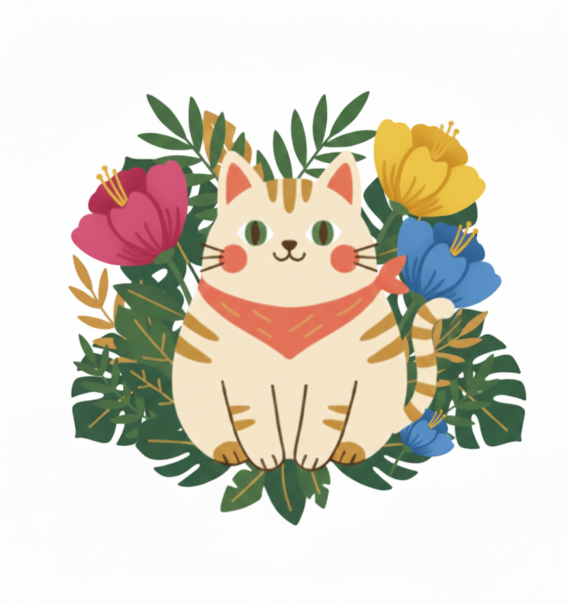
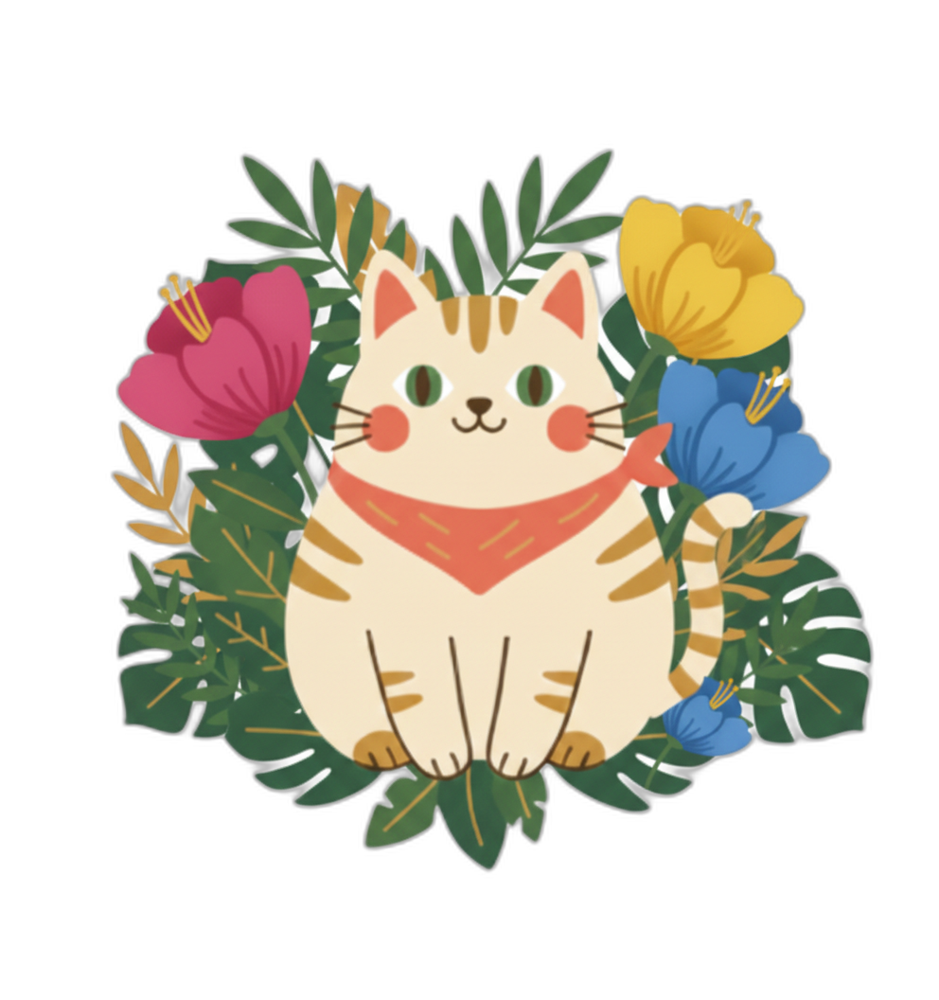
The original mark: the flat tabby in a flower-and-leaf wreath — on white, and cut out for dark or tinted surfaces.
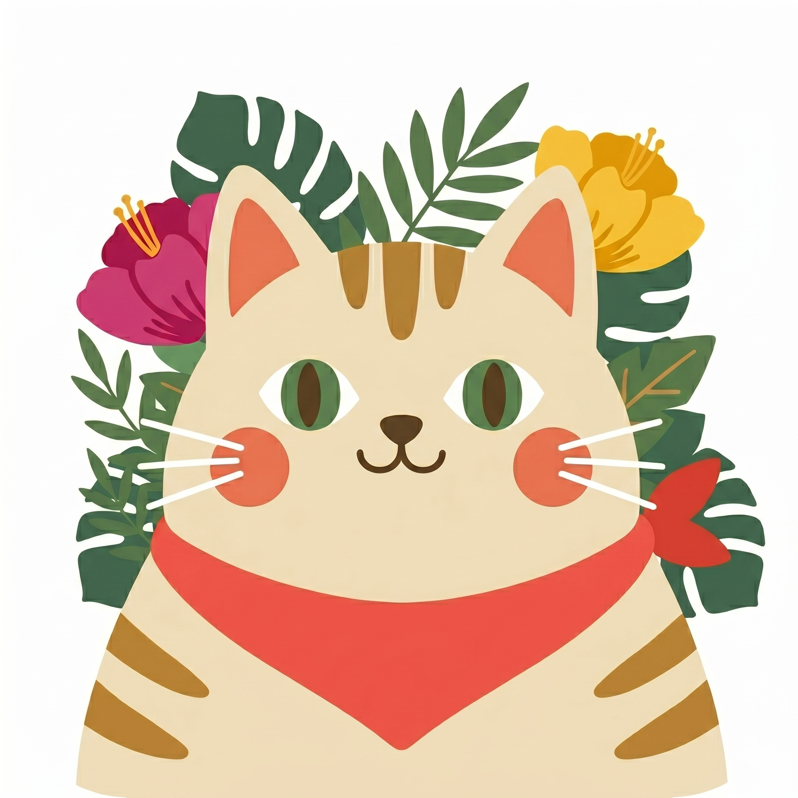
Full-bleed 2048 px close crop of the tabby and its bandana in tropical leaves — the App Store face of the early builds.
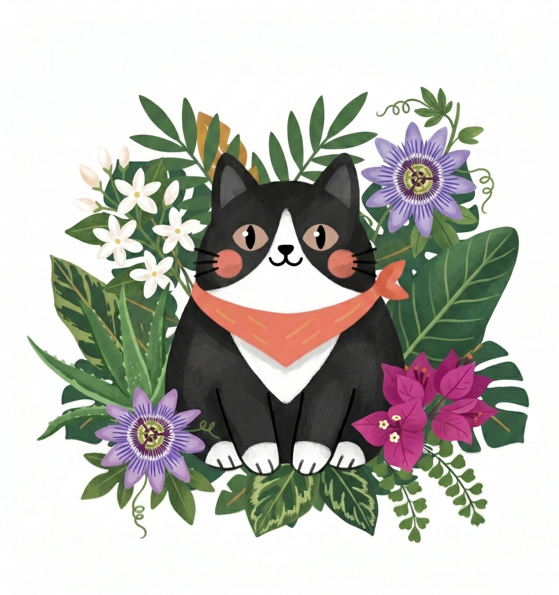
The painted default portrait — a tuxedo cat in passionflowers and jasmine. The same character fronts onboarding and the search demo; this file stood in wherever a cat had no photo.
adaptive-icon and splash-icon still hold the faint ripple placeholder, and favicon.png is Expo's default cube — three slots the tabby never reached. Kept visible so the branding to-do stays one glance away.
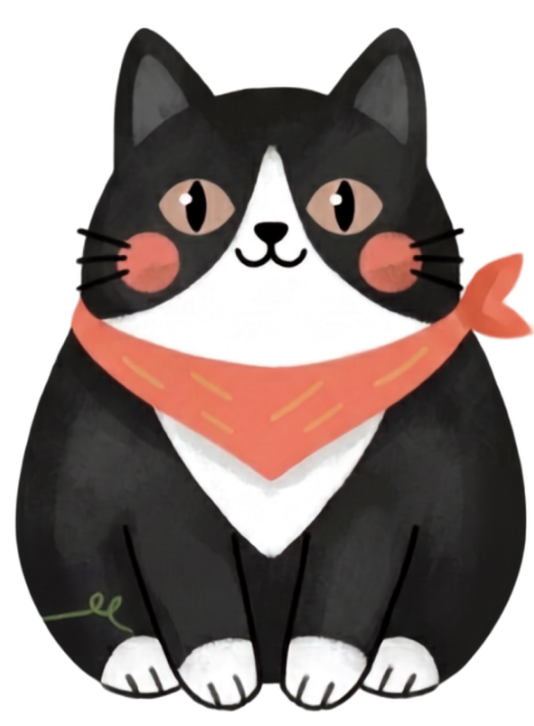
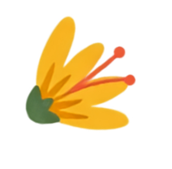
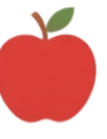
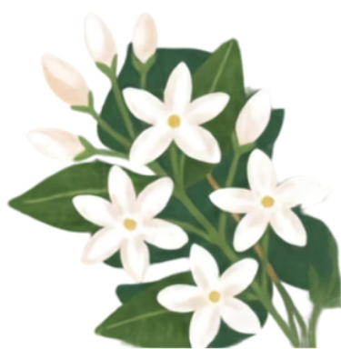
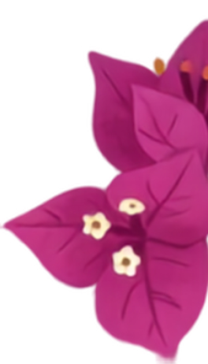
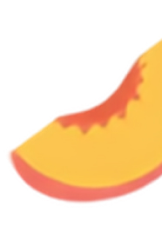
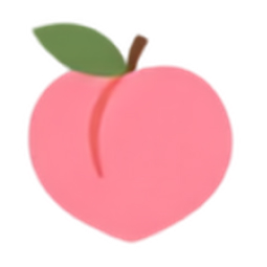
The first screen's stage in layers: the tuxedo hero framed from the edges by three blooms and three fruits (apple, peach, peach slice — the files still answer to plant-*) — parallax-ready pieces, not one flattened image.
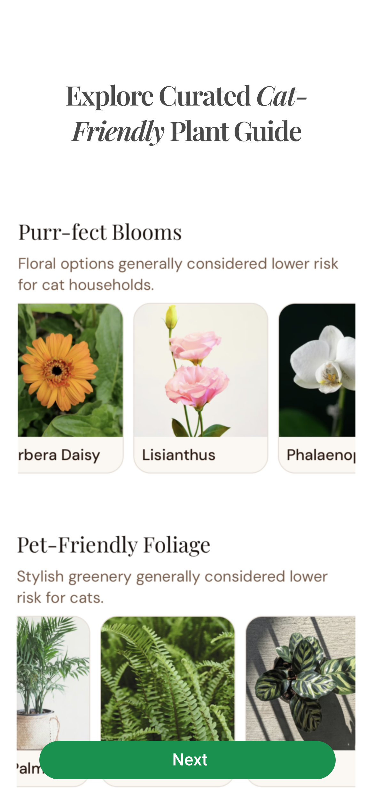
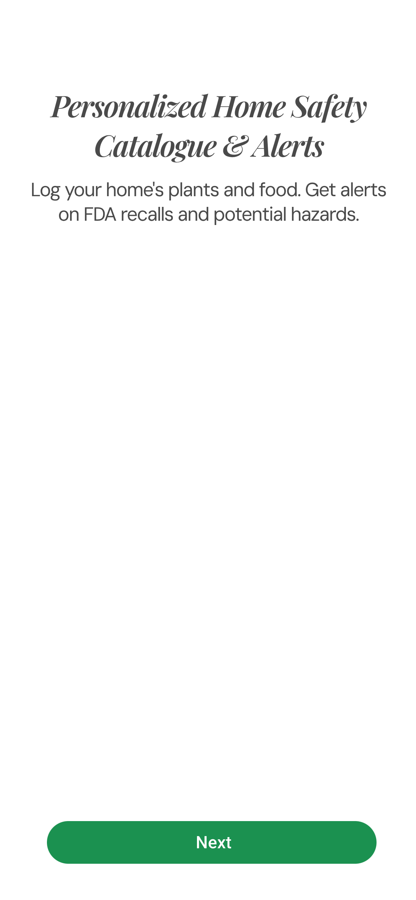
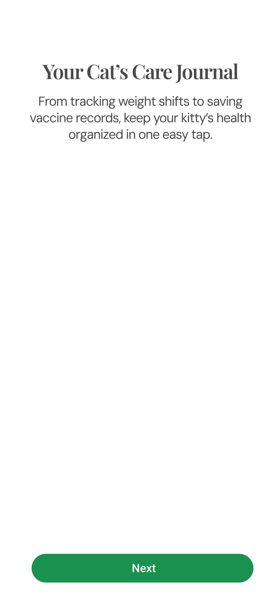
Full-screen mocks of the three promises made before sign-up: a curated cat-friendly plant guide, the home-safety catalogue with recall alerts, and the cat's care journal.
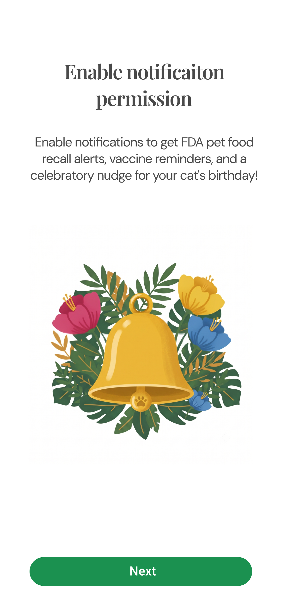
The notification-permission moment softened by a gilded bell resting in a bouquet — recall alerts and reminders framed as care, so the OS prompt feels asked-for.
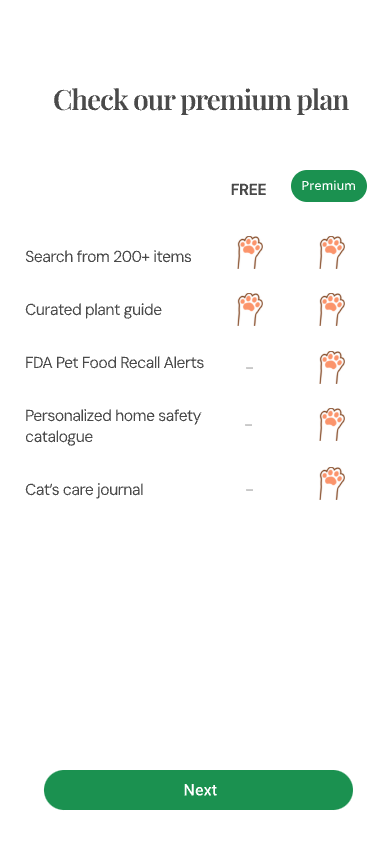
The free-vs-premium comparison table, its checkmarks drawn as paw prints — the quiet pitch one screen before the paywall.
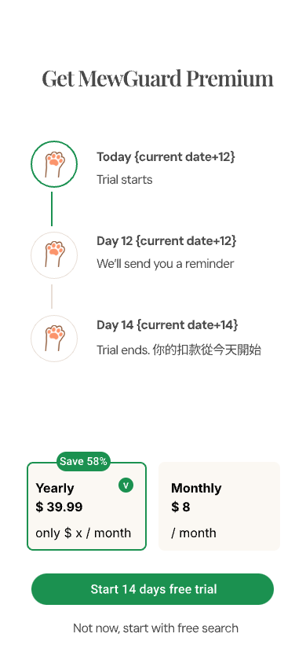
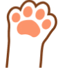
The paywall as shipped: a 14-day trial timeline over yearly/monthly plan cards, plus its serif title lockup and the paw bullet that marks each perk.
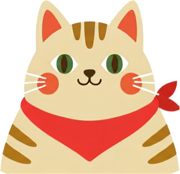
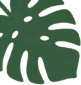
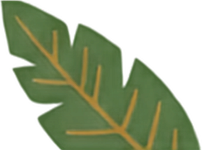
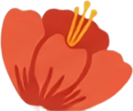
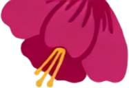
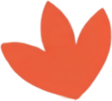
The first splash pass: the flat tabby and nine leaves and blooms — most still sitting on white cards, from before the pieces were cut out.
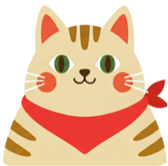
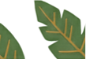
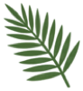
The refined splash scatter: pencil-textured, properly transparent, in three densities — the set the shipping splash screen actually composes around the mascot.
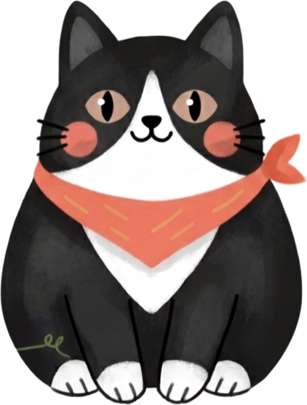
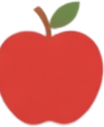
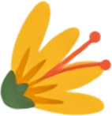
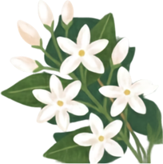
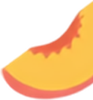
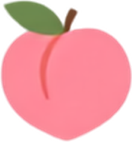
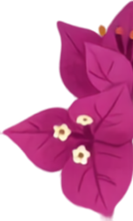
The onboarding search demo's lookup thumbnails — the tuxedo greeter plus apple, daisy, jasmine, papaya, peach and bougainvillea, the everyday things a new owner tries first.
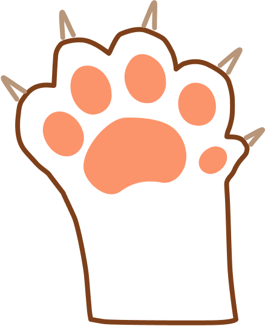
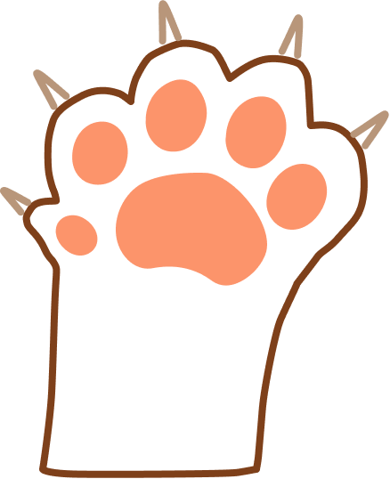
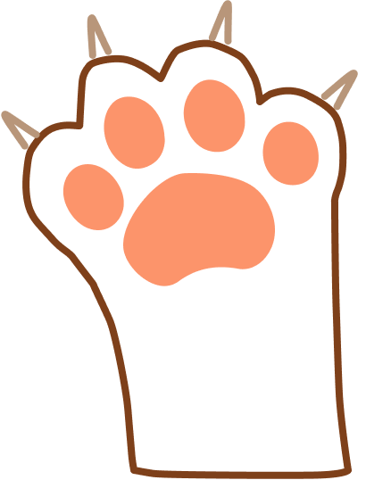
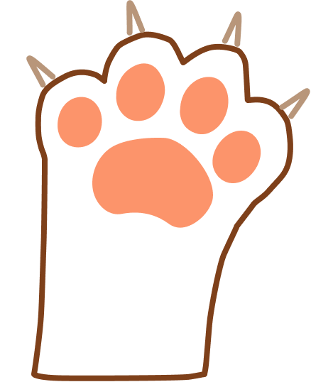
Front/back × left/right paw outlines with coral pads for the claw-trim tracker — tap the paw you just trimmed and the log stays per-paw honest.
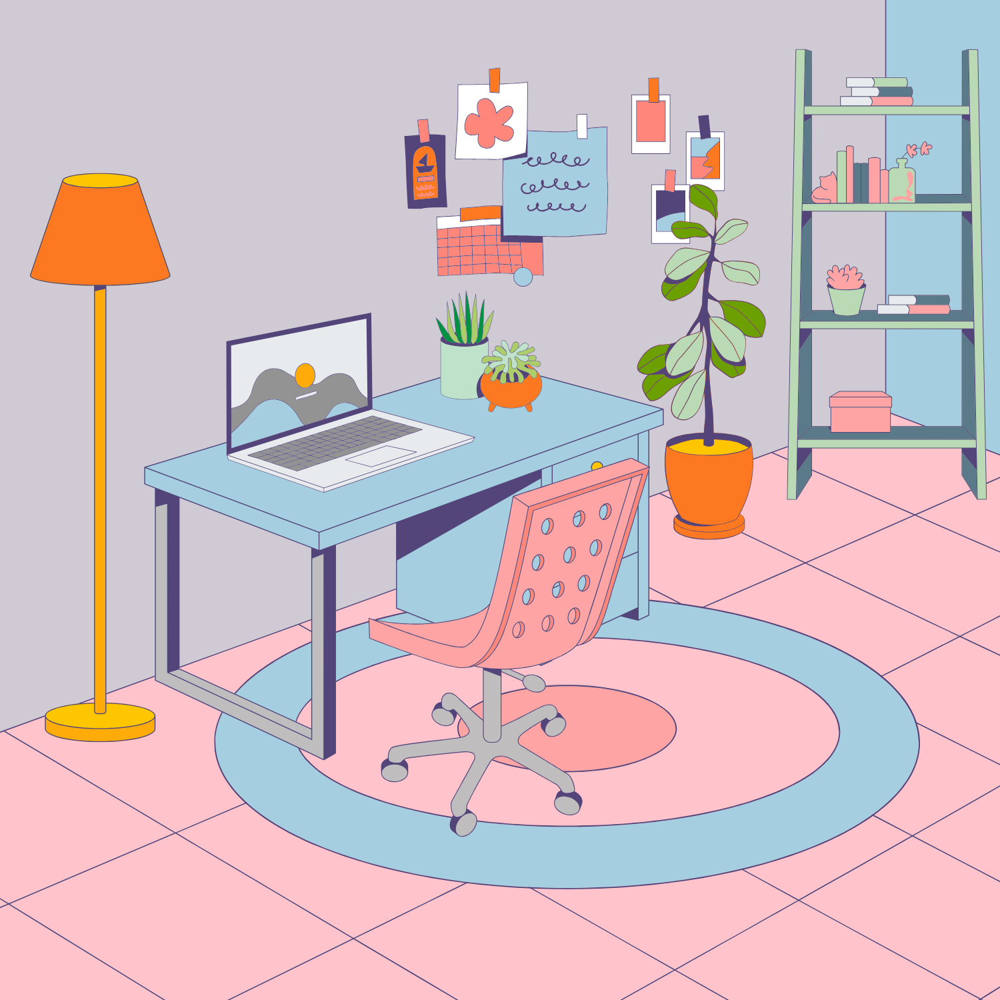
The My Cats hero backdrop — a pastel isometric room a Lottie cat lives on top of (cat.json, an external pick; its stablemates mw-cat-box and mw-sparkle-burst are canonical in lottie/).